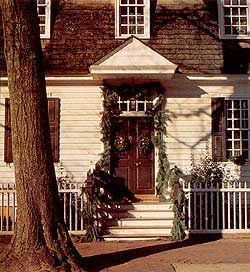
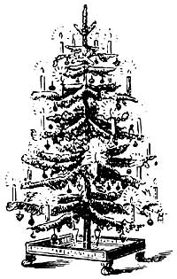

In 1842, a German named Charles Minnegerode introduced the custom of decorating trees at Christmas in Williamsburg Virginia. The tree, bedecked with strings of popcorn, gilded nuts and luminous candles, was described as "splendidly decorated." Today, millions of Americans carry on this tradition by bringing Christmas trees into their homes, adding an element of splendor and festivity to their own celebrations.
Unfortunately, once the parties are over and the season has passed, the once-splendid tree transforms into the living-room behemoth, and the job of disrobing it of its trimmings and tossing it carelessly outside becomes just one more household chore. Before you follow this unfortunate holiday tradition, take heed. There are several ways to extend the life of your Christmas tree.
1. LIVING CHRISTMAS TREES that come with their roots intact can, of course, be planted and enjoyed for many years. Pack the earth ball containing the roots in a bucket with sawdust, peat, potting soil or other mulch. Keep the soil continually moist. Plant outdoors as soon as possible after Christmas. To find out if your climate merits keeping a living tree, consult with your local nursery.
2. A WHOLE CHRISTMAS TREE makes an excellent bird feeder for your backyard. Stick the tree in the ground or leave it in its stand. A wide variety of birds will be attracted by suet, cranberry and popcorn strings, stale bread and dried chopped fruit in mesh bags. If you grow sunflower seeds, simply hang the whole sunflower head on the tree. Your family will discover that chickadees, song sparrows, cardinals and a host of other birds come for the food and stay for the shelter.
3. CUT OFF ALL THE BRANCHES and use the trunk to edge a garden. The trunk can also be strategically placed in your garden as a resting spot for birds, squirrels and other little critters.
4. PLACE THE WHOLE EVERGREEN BOUGHS on perennial beds or nursery rows to protect them from winter freezes and spring thaws. The boughs provide the steady temperatures that most plants need. Or just use the boughs as post-Christmas house decorations.
5. MANY COMMUNITIES throughout the country have tree-recycling programs, in which trees are collected from residents and then chopped up and used as mulch for plants in community parks and gardens. To find out if such a program exists near you, call city hall. Or, have your tree chipped at a local garden center and use it yourself for ground cover or mulch.
6. THE TRUNK CAN BE SAWED into logs and burned in your fireplace. Note: Don't burn the branches, since they can send off sparks.
7. BOTH TRUNK AND BRANCHES can be used by woodworking hobbyists to make any number of items, such as Christmas reindeer, birdhouses, candlesticks or paperweights.
8. IF YOU HAVE A BALSAM TREE, you can use the needles to make aromatic potpourris and sachets to enjoy year-round. After removing the decorations, strip branches of their needles, which will retain their pungency indefinitely in brown paper bags. To make a sachet, sew together (three-quarters of the way around two small pieces of material, line with muslin and add needles; then sew up the open end.
9. IN NEW ORLEANS LAST YEAR, state officials decided to drown the Christmas spirit: They plunged as many as 7,000 trees into the marshes along Lake Pontchartrain, forming an underwater dike to slow coastal erosion. When sunk in a fish pond, Christmas trees make excellent refuge and feeding areas for fish. To find out if any such environmental projects exist in your community, contact the nearest National Park Service or local recycling program.
10. AND LAST, BUT NOT LEAST: If you still have your Christmas tree out in the yard when warm weather appears, there is one more use for it. If permitted in your community, burn the branches and spread the ashes in your garden. The branches contain valuable nutrients and minerals that can enrich the soil and help yield better flowers and vegetables.
Mary Louise Boldan is a technical writer in Arlington Heights, Illinois.
|
 Boughs can make beautiful Twelfth Nightdecorations. |
 |
|